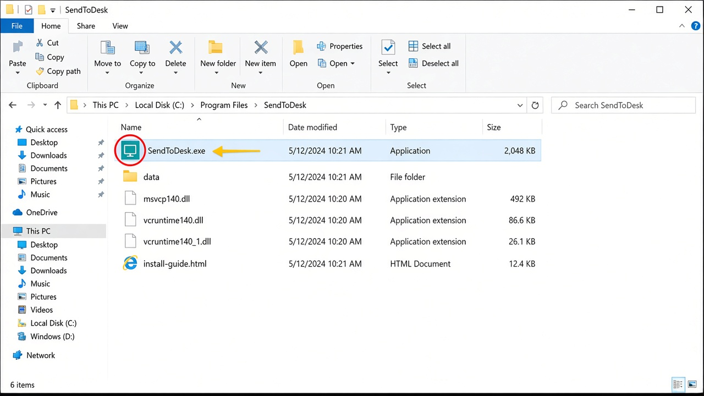
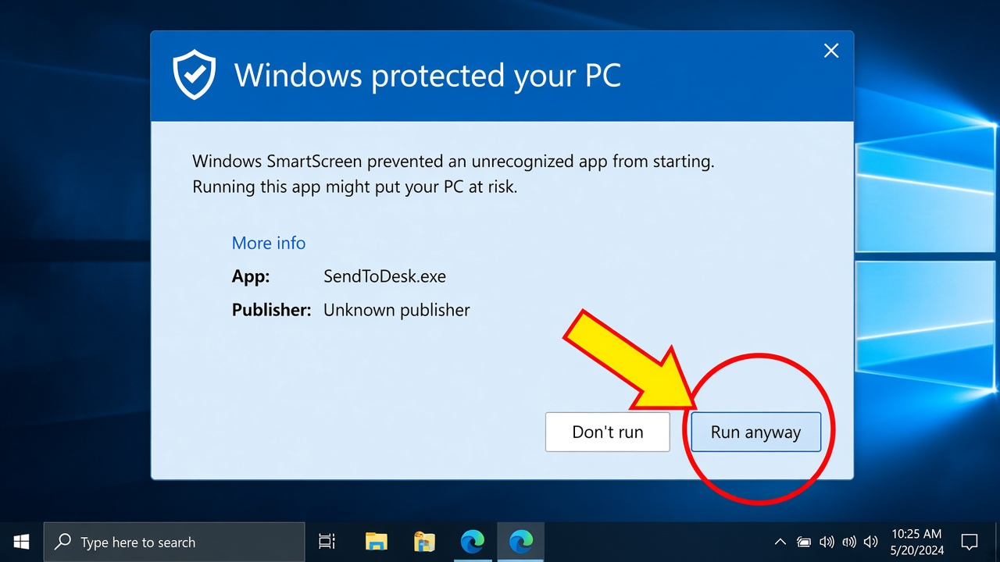

1 Unzip the download
Right-click the zip file → Extract All → Extract. Open the new folder. Do not run the app from inside the zip.
Keep the whole folder together. Copying only SendToDesk.exe will not work.
Windows
Right-click the zip file → Extract All → Extract. Open the new folder. Do not run the app from inside the zip.
Double-click SendToDesk.exe.

This is normal the first time. The window only shows Don’t run. You must click the small link first.

A new button appears. Click Run anyway.

The first time the app opens, Windows may ask about the firewall. Your phone cannot find the PC if you click Cancel.

Keep SendToDesk Desktop open. Put the phone and PC on the same Wi‑Fi. In the Android app, connect with Nearby, QR, or the 6-digit code.
Open Windows Security → Firewall & network protection → Allow an app through firewall → find SendToDesk → tick Private → OK. Then open the app again.